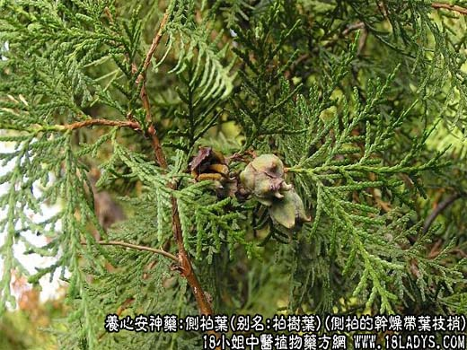
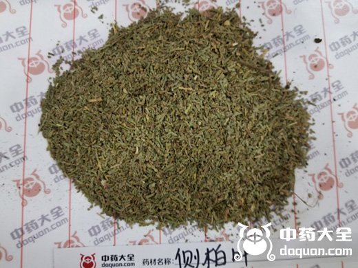
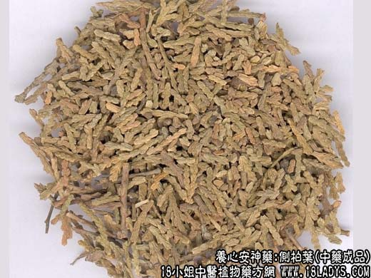
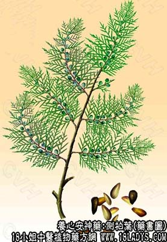

侧柏叶源植物图片

侧柏叶图片


别名：柏树叶。
来源：为侧柏的干燥带叶枝梢。
性状鉴别：带叶枝梢，中轴扁圆柱形，长短不一，直径2毫米左右，分枝稠密。叶鳞片状，抱茎交互而生，作扁平状，节节相连。排列紧密，顶端呈三角形。灰绿色。质脆，易折断。气微，味微苦，涩。以灰绿色，无树枝者为佳。
主要成分：含挥发油，其中有杜松酸、侧柏酮等。
药理作用：1、止血。实验证明能缩短和凝血时间。生用效力较好，侧柏炭的凝血作用反比生品差。
2、抗菌。对肺炎双球菌、金黄色葡萄球菌、白色葡萄球菌、宋内氏痢疾杆菌有较明显的抑菌作用。其酒精浸剂在1:180,000浓度下仍能抑制结核杆菌。
炮制：生用或炒炭。
性味：苦、涩、微寒。
归经：入肺、肝、脾经。
功能：凉血，止血。
主治：吐血、衄血、便血、崩血、尿血。
临床应用：1、广泛用于治疗各种内出血而属热证者（血色鲜红、口干咽燥、脉弦数），止血效果较确实，为中药止血药中较可靠的药物之一，常配艾叶等，方如四生丸。
2、用于治疗慢性气管炎（有热咳、燥咳而无痰者较适用），前人认为侧柏叶能“养阴滋肺”，现已证实其作用为镇咳、祛痰。可用侧柏叶末9g配红枣12g，浓煎代茶。用片剂效果亦好，每日服量相当于生品90g，分5~6次服，初步观察，能明显改善症状。
3、外用治疗烧伤，以侧柏炭研成细末，过筛后用熬沸的豆油或香油调成软膏，适用于中小面积程度较轻的烧伤，创面经初期处理后余敷，有一定的消炎和去腐作用。
使用注意：侧柏叶苦寒，多服、久服后可有头晕、恶心、胃部不适、食欲减退等反应。极少数人可用浮肿、皮疹等过敏性反应，但停药后症状即消失。
用量：3~18g，外用适量。